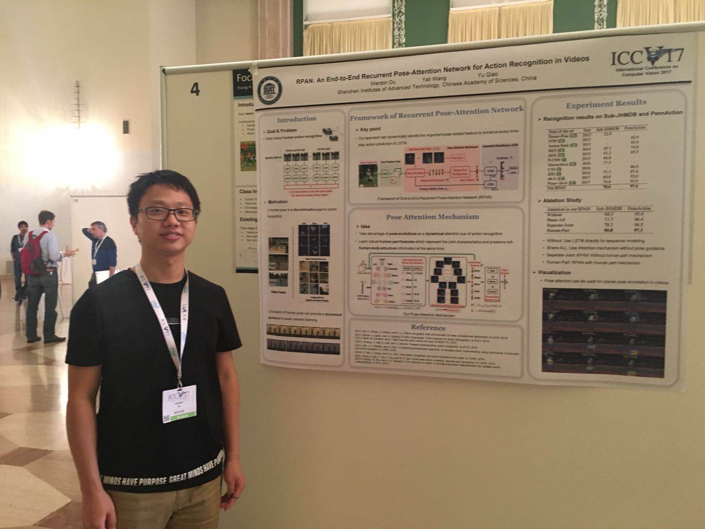

|  | Wenbin Du |
I'm looking for a postdoctoral position in Computer Vision and Deep learning.
I received the Ph.D. degree in Pattern Recognition and Intelligent System from Shenzhen Institutes of Advanced Technology,
Chinese Academy of Sciences under the supervision of Prof. Yu Qiao in 2018. And
I received the M.S. degree in Software Engineering from Donghua University in 2014.
My current research interests include Computer Vision and Deep Learning, especially Recurrent Neural Networks for Action Recognition. I'm very luck to have close cooperation with Dr. Yali Wang.
Recurrent Spatial-Temporal Attention Network for Action Recognition in Videos |
|
RPAN: An End-to-End Recurrent Pose-Attention Network for Action Recognition in Videos |
|
Exploring Fisher Vector and Deep Networks for Action Spotting |
|
Object-Scene Convolutional Neural Networks for Event Recognition in Images |
|
Deep Rehabilitation Gait Learning for Modeling Knee Joints of Lower-limb Exoskeleton |
|
Gait phase recognition for lower-limb exoskeleton with only joint angular sensors |